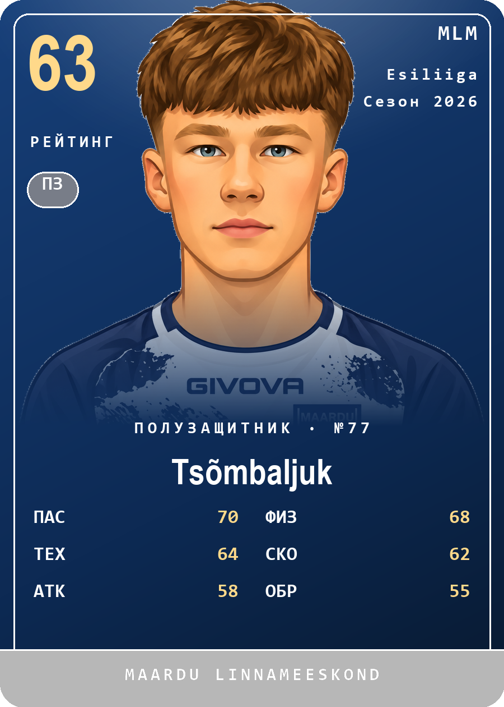
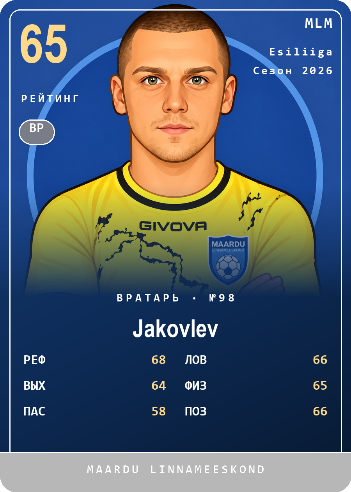

Шаблон карточки проверен на двух разных позициях: полузащитник и вратарь. У вратаря — свой набор атрибутов (рефлексы, ловля, выходы, позиционирование вместо атаки/обороны), что подтверждает: шаблон гибкий.

